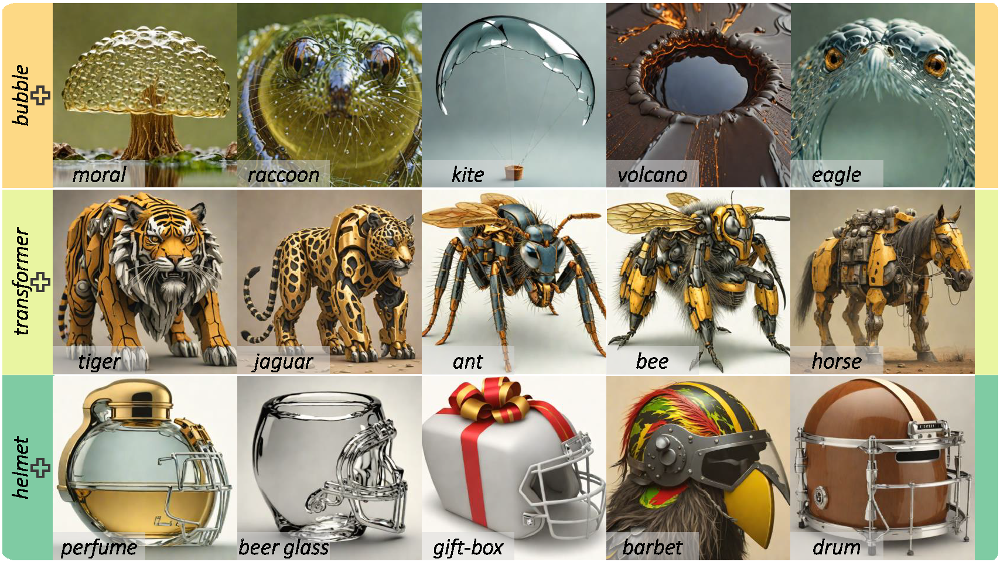
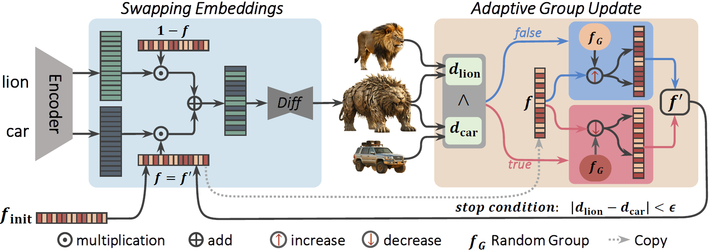
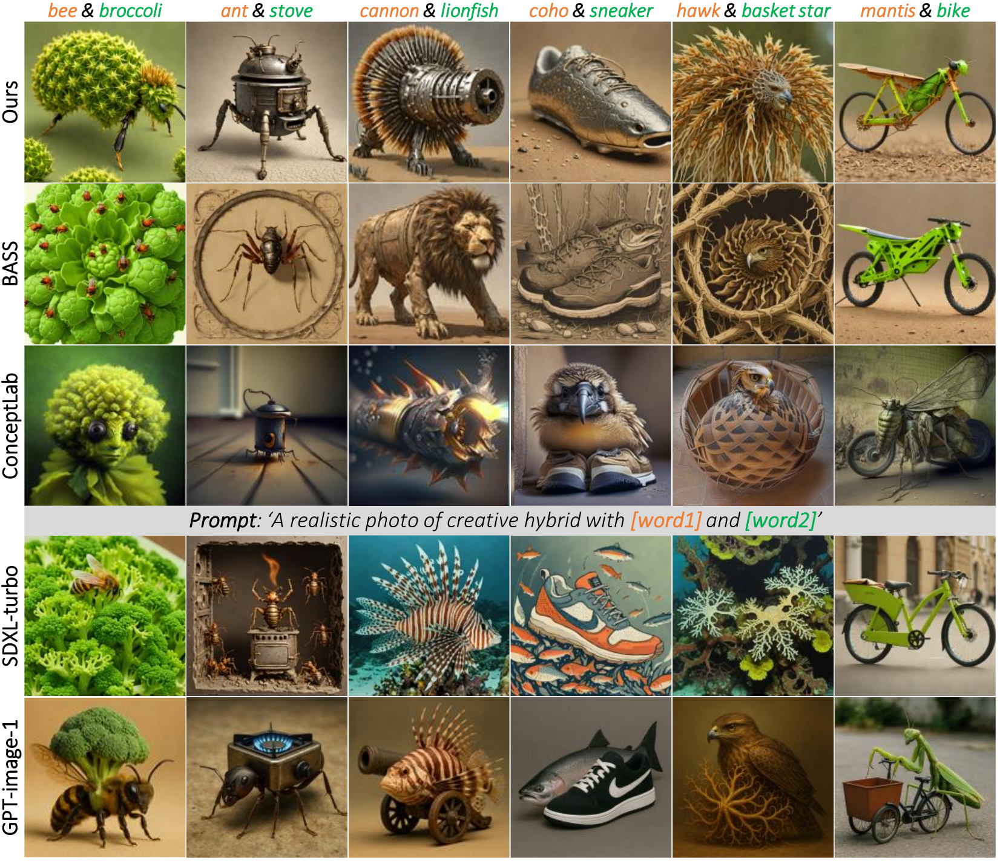
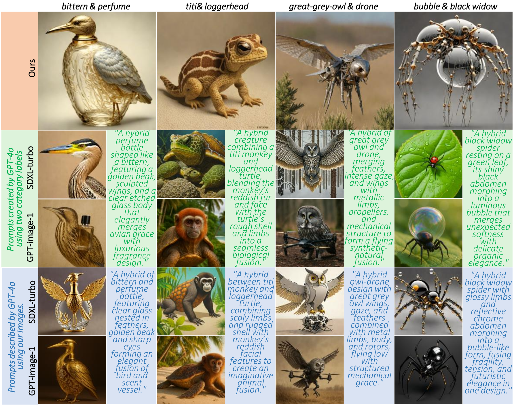
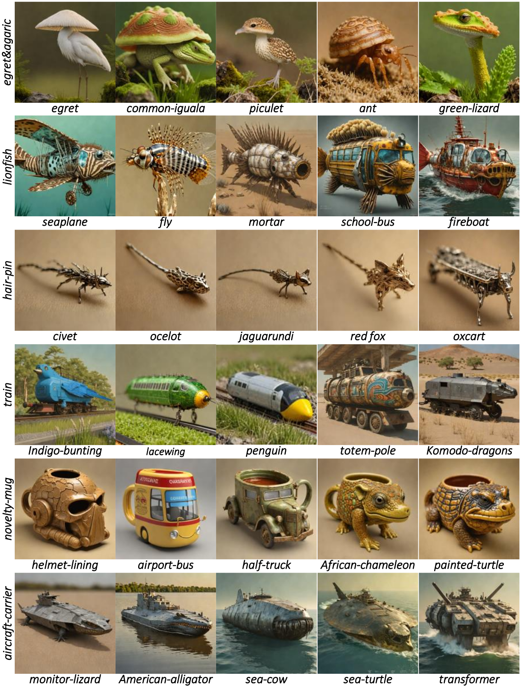
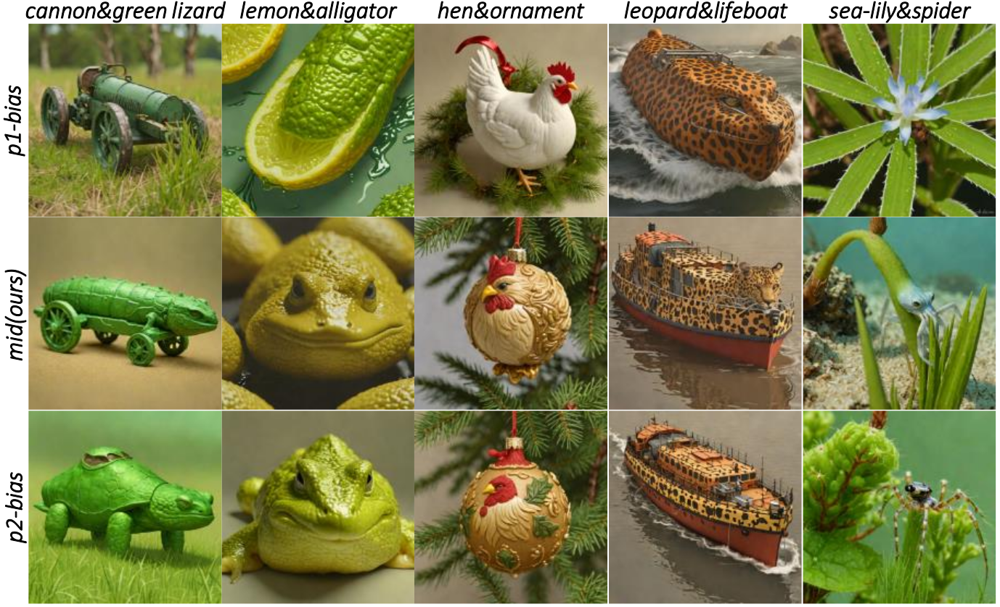

We present a simple yet highly efficient method for seamless object fusion, enabling the creation of novel and visually striking hybrid objects. For
instance, as shown in our results, we successfully merge the concept of a bubble with diverse concepts such as moral, raccoon, kite, volcano, and eagle.
Abstract
Fusing cross-category objects to a single coherent object has gained increasing attention in text-to-image (T2I) generation due to its broad applications in virtual reality, digital media, film, and gaming. However, existing methods often produce biased, visually chaotic, or semantically inconsistent results due to overlapping artifacts and poor integration. Moreover, progress in this field has been limited by the absence of a comprehensive benchmark dataset. To address these problems, we propose Adaptive Group Swapping (AGSwap), a simple yet highly effective approach comprising two key components: (1) Group-wise Embedding Swapping, which fuses semantic attributes from different concepts through feature manipulation, and (2) Adaptive Group Updating, a dynamic optimization mechanism guided by a balance evaluation score to ensure coherent synthesis. Additionally, we introduce Cross-category Object Fusion (COF), a large-scale, hierarchically structured dataset built upon ImageNet-1K and WordNet. COF includes 95 superclasses, each with 10 subclasses, enabling 451,250 unique fusion pairs. Extensive experiments demonstrate that AGSwap outperforms state-of-the-art compositional T2I methods, including GPT-Image-1 using simple and complex prompts. Project Page
Our framework
The Pipeline of our adaptive group swapping, which performs group-embedding swaps and adaptively updates the fusion using a visual balance between the input objects and the blended result.
Comparing Results
Comparison with the combinational T2I methods.
Comparison with combinational T2I methods (e.g., BASS [Li et al. 2024] and ConceptLab [Richardson et al. 2024]) and prompt-based methods (e.g., SDXL-Turbo [Surkov et al. 2024] and GPT-image-1 [OpenAI 2025]). Compared to them, our approach demonstrates superior object blending.
Comparison with the prompt-based methods.
Comparison with prompt engineering. We evaluate our method against SDXL-Turbo and GPT-image-1 , using GPT-4o to generate prompts. Top (Our AGSwap): Successfully fuses objects into a coherent result. Middle: Prompts are generated by GPT-4o from two category labels, leading to less precise compositions. Bottom: Prompts are derived by GPT-4o from our synthesized images, yet still struggle with seamless fusion.
More Visual Results
Stylist Results
presents the results of our method under stylized prompts.We adopted five distinct styles: colorful graffiti, lowpoly, mosaic, pop art, and watercolor. The input prompts were modified to follow the format "A [style] of [word1]" and "A [style] of [word2]". As shown in the figure, our method is still able to generate creative and coherent fusion results under stylized descriptions, demonstrating its effectiveness across different visual styles.

Manually Controlled Bias in Fusion Results
presents the results under manually specified bias
